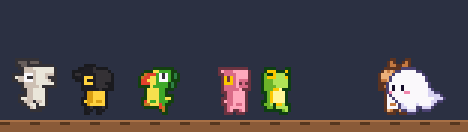
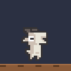
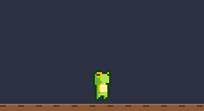
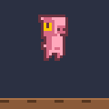
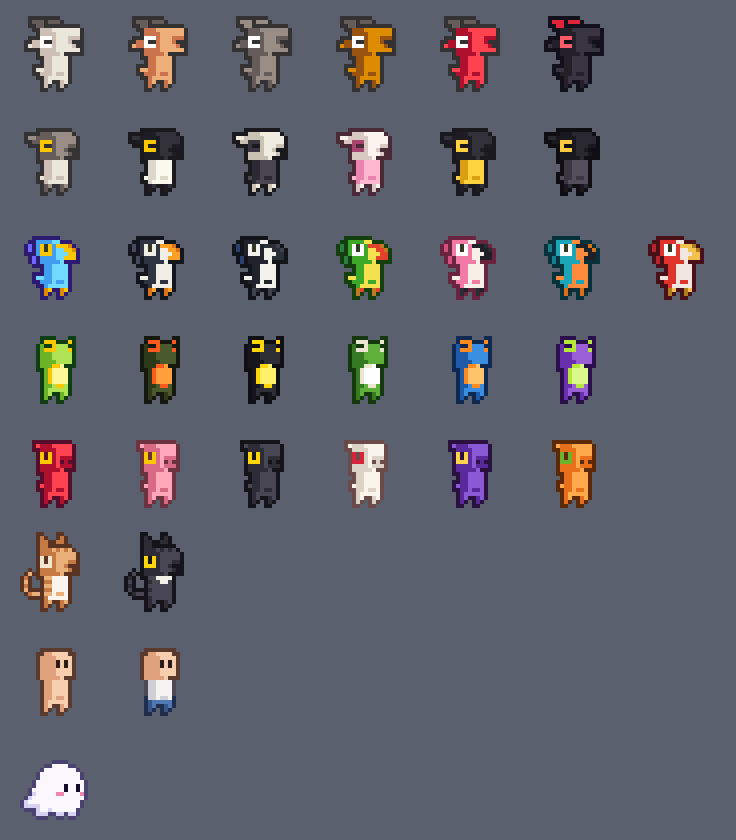

macOS 메뉴바 앱 · 무료
조용한 사무실,
화면 아래에 동료들이 걸어 다닙니다
각자 모니터만 보는 오후. Offiky 를 켜 두면 옆자리 동료의 작은 픽셀 캐릭터가 내 화면 아래를 돌아다닙니다.

무료로 설치하기누가 자리에 있는지 한눈에
같은 채널에 있는 동료의 캐릭터가 화면 아래를 걸어 다닙니다. 옆자리가 비어 있어도 사무실에 사람이 있다는 느낌이 듭니다. 메신저를 열 만큼은 아니지만 한마디 건네고 싶을 때 딱 맞습니다.
한마디는 ⌥F

⌥F 를 누르고 입력하면 내 캐릭터 머리 위에 말풍선이 뜹니다. 동료들 화면에도 똑같이 보입니다. 말풍선은 5초 뒤 사라지고, 대화는 어디에도 저장되지 않습니다.
⌥D 로 직접 조종
동료 캐릭터에게 달려가다 부딪히면 둘 다 아파합니다.
그다음은 서로 고개 숙여 인사하는 게 예의죠.

집어 들고, 떨어뜨리고

마우스로 내 캐릭터를 집어 원하는 곳에 옮길 수 있습니다. 아주 높은 곳에서 떨어뜨리면 묘비가 됩니다. 걱정 마세요, ⌥D 를 누른 뒤 ↑ 를 누르면 살아납니다.
나만의 캐릭터
염소, 양, 새, 개구리, 돼지, 고양이, 사람, 유령. 모양을 고르고 색도 바꿀 수 있습니다. 메뉴 → 내 캐릭터…

일은 방해하지 않아요
- 메뉴바에만 있고 Dock 에는 없습니다
- 캐릭터 위를 클릭해도 아래 창이 그대로 클릭됩니다
- 가입·계정·서버 없음 — 같은 네트워크면 서로 찾아냅니다
- 대화는 앱을 종료하면 지워집니다
- 모든 통신은 사무실 네트워크 안에서만 오갑니다
- Apple Silicon·Intel, macOS 14 (Sonoma) 이상
설치는 한 줄
- 터미널에 붙여 넣으세요.
Homebrew 가 없다면 brew.sh 에서 먼저 설치하세요.brew install --cask supungbab/tap/offiky - 응용 프로그램 폴더에서 Offiky 를 엽니다. 로컬 네트워크 사용을 물으면 허용을 누르세요. 그래야 동료를 찾을 수 있습니다.
- 처음엔 1채널에 들어갑니다. 다른 채널은 메뉴바 아이콘 → N채널 에서 고르세요.
💡 재택 중인 동료도 보이나요?
아니요. 같은 네트워크(예: 사무실 Wi-Fi)에 있는 사람끼리만 보입니다. 한 채널에 15명까지 함께할 수 있어요.
💡 동료가 안 보이면?
같은 채널인지 → 같은 버전인지(다르면 메뉴에 표시) → 시스템 설정 › 개인정보 보호 및 보안 › 로컬 네트워크에서 허용했는지 확인하세요.
💡 업데이트는?
새 버전이 나오면 메뉴바 아이콘에 빨간 점이 생깁니다. 메뉴의 새 버전 받기를 누르세요.
Office + Lucky, "오피키"라고 읽습니다. 무료이며 소스는 MIT 라이선스로 공개되어 있습니다. 캐릭터 그림은 ChaosWitchNikol 님의 Goat Characters·Animal Characters (CC BY 4.0) 를 바탕으로 색과 모양을 바꾼 것입니다.